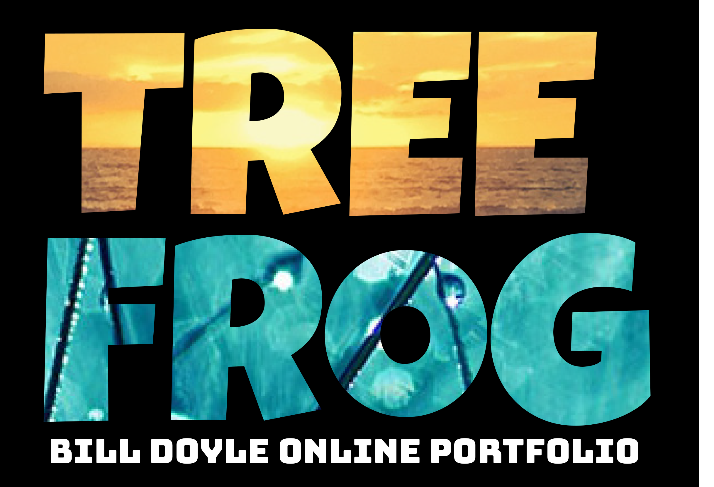

Hello,
I'm Billy.
a programmer with cool interests.

Let's climb this mountain together.
Experienced Print and Digital Designer - For Hire.
"The secret of success in life is to be ready for opportunity when it comes."
About Me:
A World Wide Company Covid Layoff in early 2020 elimated my situation and forced me to regroup to retrain and stay sharp using udemy.com as I "rebranded" me for today.
udemy.com
I have over 25 years of experience as a graphic designer which can prove to be an asset to your design team. As my formal resume states my qualifications there, I will summerize my skillsets more visually with projects here in this online portfolio I created using Atom Editor coding. I know your time is valuable, so I will make this brief and extremely enjoyable. Thank you for your time and have a great day.
🸠production layouts
🸠adobe creative suite
🸠advertising understanding
🸠proofreading
🸠marketing
🸠flexible and adaptable
🸠leadership
🸠branding strategies
🸠web design
🸠powerpoint
🸠video editing
Three great experiences of past employment earned three great recommendations from past supervisors...
"Bill was task oriented with strong attention to detail."
"Bill was always inspired by a challenge and often exceeded expectations in his designs."
"Bill was a true team player, and always managed to complete his work duties along with other assignments he was asked to pick up."
Ok, think of web design creation like you are constructing a house, with the HTML part of it representing the walls and floors and ceiling of that house. The wood and the dry wall make up this beautiful structure as it serves like a foundation or HTML.
The CSS of it represents the decoration part of it. For example, those walls are painted a certain color, maybe it's wallpaper, and the floors are tiled or carpeted? That is CSS.
That is how I conceptualize web design.
I created fictitious clients and projects in my learning process only where I designed digital webpages to practice using Atom Editor coding. Those projects are highlighted here to give you an idea of my new skillset that I learned during this Covid Layoff period. I have the strong foundation in place that can translate to your design ideas for years to come.
Moreover, I have spent many quality years doing print design as I designed and corrected supermarket circular pages as well as proofread those pages too. I used Indesign, Photoshop and Illustrator as tools for those successes. I became good at it but I feel times changed and the graphic design world today has become digital as well. In this webpage here I hoped to showcase this newer skillset. My print design ideas are shown here:
Print Ideas©2022 For Online Portfolio only to highlight skill sets for employment. This webpage was designed entirely by Bill Doyle using Atom Editor (coding).